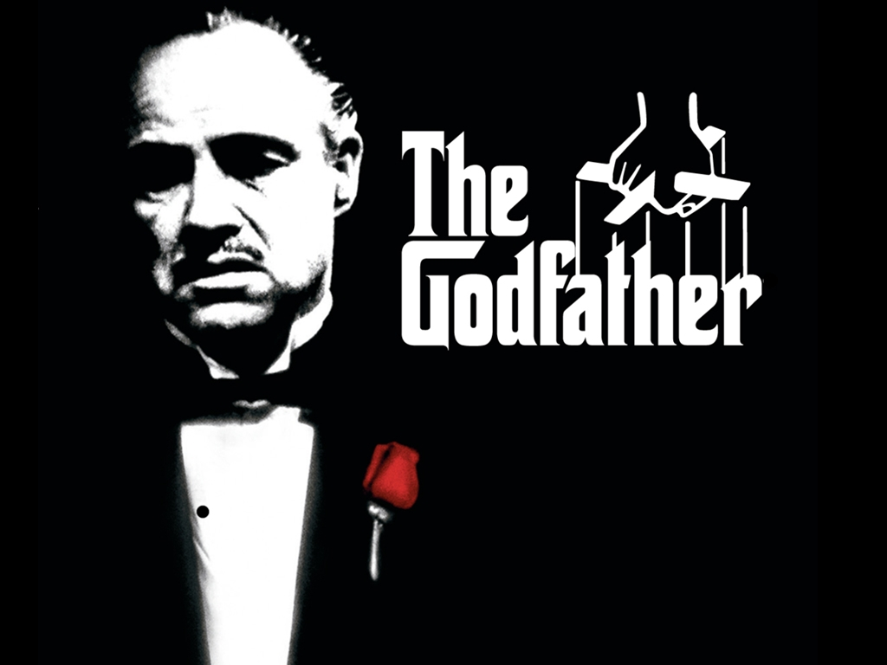

Coppola has found a style and a visual look for all this material so "The Godfather" becomes something of a rarity: a really good movie squeezed from a bestseller.
AMC created a a list of the Greatest 100 Movies of All Time. These movies are the top 3 movies on AMC's list.
The list includes:
- The Godfather [Film Series]
 - Shawshank Redemption

- Gone with the Wind